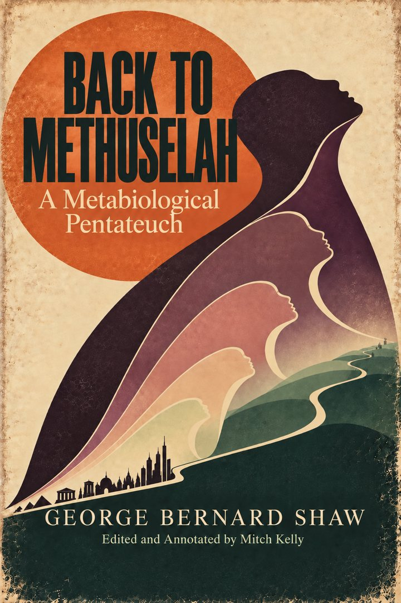

Unruly Edition
Back to Methuselah
Edited and Annotated by Mitch Kelly
Five plays exploring what radically longer lives might mean for human development and civilization.
In preparation
Publication details will be announced.
About this edition ↓
About the book
The original work
Shaw’s dramatic cycle ranges from the Garden of Eden into a distant future. Through imagined transformations in human lifespan, it asks how longevity might change learning, ambition, politics, and the relationship between individuals and civilization.
Announced titles, contents, formats, and publication dates are subject to change.